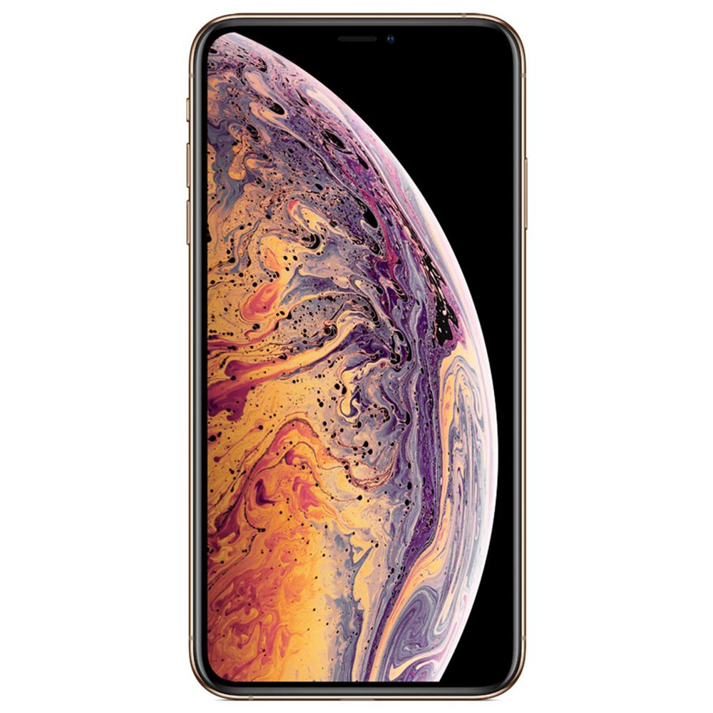

iphone x
$120.000
El chip A14 Bionic es muy superior a cualquier otro chip de smartphone. El sistema de cámaras Pro te permite tomar fotos espectaculares con poca luz, y el iPhone 12 Pro Max lleva tu talento fotográfico mucho más allá. Además, el nuevo frente de Ceramic Shield es cuatro veces más resistente a las caídas. Descubre todo lo que el iPhone 12 Pro hace para llevarte al siguiente nivel.
COMPRAR